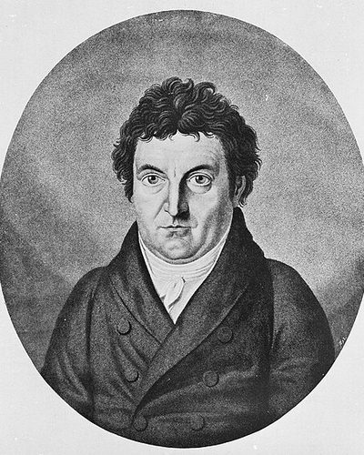

Ideologies / Nationalist
What is Romantic Nationalism?
Romantic Nationalism is a political ideology in the Nationalist family. Delivered in Berlin under French occupation, the addresses hold that a nation is defined by its original, living language, which shapes the inner life of those who speak it. Its true borders are these inner ones, not rivers or treaties. Fichte called for a new national education, run by the state and reaching every child, to form a generation devoted to the whole and able to restore German independence.
A people is made by its language, and remade by its schools.
Defined from: Johann Gottlieb Fichte, Addresses to the German Nation (1808)
See how close you are to Romantic Nationalism Dare a friend to answer as one


Where Romantic Nationalism stands on 13 axes
Each axis runs from 0 to 100. A score of 50 is the middle. On a classic compass it sits in the Authoritarian Right quadrant.
| Axis | Position | Score | In words |
|---|---|---|---|
| EconomyMarket to Planned | 55 | Balanced | |
| OwnershipPrivate to Collective | 40 | Leans Private | |
| RightsLiberty to Security | 55 | Balanced | |
| GovernmentDemocracy to Autocracy | 45 | Balanced | |
| StructureDecentralised to Centralised | 65 | Leans Centralised | |
| NationInternationalist to Nationalist | 90 | Very strongly Nationalist | |
| ImmigrationMulticulturalist to Assimilationist | 85 | Very strongly Assimilationist | |
| ValuesProgressive to Traditional | 60 | Leans Traditional | |
| TechnologyAccelerationist to Precautionary | 45 | Balanced | |
| EnvironmentIndustrialist to Environmentalist | 45 | Balanced | |
| ReligionSecular to Religious | 55 | Balanced | |
| MilitaryPacifist to Militarist | 50 | Balanced | |
| TradeFree Trade to Protectionist | 65 | Leans Protectionist |
Ideologies closest to Romantic Nationalism
- Gaullism88% alike
- Garveyism87% alike
- Peronism (Justicialism)86% alike
- One Nation Conservatism85% alike
- Pan Turkism84% alike
Its opposite on this map is Crypto Anarchism, at 37%.
Parties near Romantic Nationalism
- Brothers of ItalyItaly. Pronti a risollevare l'Italia (2022)86% alike
- Social Democratic PartyUnited Kingdom. Homecoming (2024)85% alike
- Sinn Féin of 1918Ireland. Sinn Féin Manifesto (1918)85% alike
- Zionist OrganizationSwitzerland. The Basel Programme (1897)85% alike
Common questions
What is Romantic Nationalism?
Romantic Nationalism is a political ideology in the Nationalist family. Delivered in Berlin under French occupation, the addresses hold that a nation is defined by its original, living language, which shapes the inner life of those who speak it. Its true borders are these inner ones, not rivers or treaties. Fichte called for a new national education, run by the state and reaching every child, to form a generation devoted to the whole and able to restore German independence.
What does Romantic Nationalism believe?
In one line: A people is made by its language, and remade by its schools. Its strongest positions are Nationalist, Assimilationist, Centralised. Delivered in Berlin under French occupation, the addresses hold that a nation is defined by its original, living language, which shapes the inner life of those who speak it. Its true borders are these inner ones, not rivers or treaties. Fichte called for a new national education, run by the state and reaching every child, to form a generation devoted to the whole and able to restore German independence.
Who founded Romantic Nationalism?
Romantic Nationalism is defined here from Addresses to the German Nation (1808) by Johann Gottlieb Fichte. The thinker most tied to it is Johann Gottlieb Fichte (1762 to 1814).
Is Romantic Nationalism left wing or right wing?
On a classic two axis compass Romantic Nationalism falls in the Authoritarian Right quadrant, which means the economic centre and the middle between libertarian and authoritarian. Left and right hide a lot, though, which is why EthosScales scores it on thirteen separate axes.
How is Romantic Nationalism different from Gaullism?
They are close: 88% alike. The biggest gaps are on Immigration, where Romantic Nationalism scores 85 and Gaullism scores 65, and Structure, where Romantic Nationalism scores 65 and Gaullism scores 80. On each axis, 0 is one end and 100 is the other.
Think this is wrong? Suggest a correction. The scores are editorial estimates.